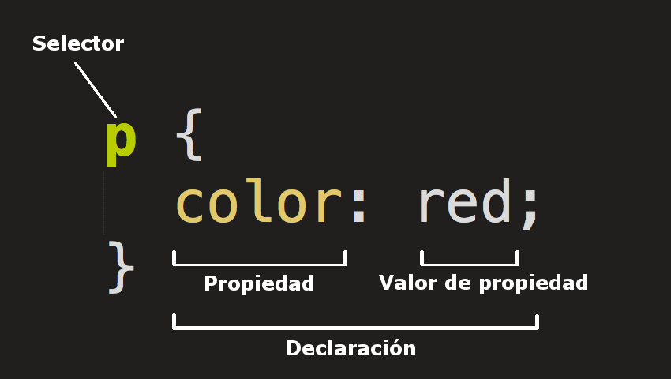

Parte 1
1- ¿Qué significa CSS?
Hojas de estilo en cascada y en ingles Cascading Stylesheets
2- ¿Para qué sirve el CSS? ¿Qué programa se utiliza para interpretar el CSS?
el CSS es un lenguaje informático que especifica cómo se presentan los documentos a los usuarios: cómo se
diseñan, compaginan, etc.
Los programas utilizados son los navegadores y el browser
3- ¿A qué se llama regla de CSS?
cada usuario define las reglas que especifican los grupos de estilos que van a aplicarse a elementos particulares o grupos de elementos de la página web.
4- ¿Cuál es la anatomía de la regla de CSS? Agregar imagen explicativa y utilizando una lista descriptiva explicar sus elementos
Entre estas habrá una o más declaraciones, que tomarán la forma de pares de propiedad y valor. Cada par especifica cada una de las propiedades de los elementos seleccionados y el valor que queremos dar a esa propiedad.
5- ¿Qué es un selector en CSS?
Un selector de CSS es la parte de una regla CSS que describe con qué elementos de un documento coincidirá la regla. A los elementos coincidentes se les aplicará el estilo especificado de la regla.
6- Identificar y definir los selectores: de ID, de clases, universal, de etiquetas, descendente.
ID-Este tipo de selector es igual al de clase, aunque lo aplicaremos a un único elemento HTML de nuestra página. Esto se debe a que el atributo ID de HTML identifica a un elemento HTML por medio de un nombre. .
CLASE-El selector de clases CSS combina elementos según el contenido de su atributo de clase.
UNIVERSAL-Nos permite aplicar estilos a todos los elementos HTML de un documento y se indica mediante el *,
ETIQUETA-Podemos, seleccionar varias etiquetas al mismo tiempo concatenándolas con el signo , (coma)
DESCENDENTE-Con este selector seleccionamos un elemento que está dentro de otro del mismo tipo. Estos seectores siempre están formados por dos o más selectores separados entre si.
7- Explicar brevemente utilizando una lista ordenada: ¿cómo funciona el CSS?
- El navegador carga el HTML
- Convierte el HTML en un DOM. Este nos representa el documento en la memoria del ordenador.
- El navegador nos va ayudar a buscar la mayor parte de los recursos vinculados al documento HTML, como las imágenes y los videos incrustados.
- Este paso se llama arbol de renderizacion ya que el navegador analiza el CSS y ordena en diferentes
«cubos» las diferentes reglas según el tipo de selector.
Para cada tipo de selector que encuentre, calcula qué reglas deben aplicarse y a qué nodos en el DOM se les aplica el estilo según corresponda - El árbol de renderización presenta la estructura en que los nodos deben aparecer después de aplicarle las reglas.
- El ultimo paso lo podremos ver en la pantalla que nos muestra visual de la página
8- ¿Cuáles son las tres formas para vincular CSS con HTML?
- utilizando la etiqueta style: Dentro fr la etiqueta "head" utilizando la etiqueta "style" es decir que los CSS se aplica al mismo documento HTML
- utilizando el atributo style: En nuestro HTML aplicaremos estilos directamente a la etiqueta
- utilizando un archivo externo: Esta opcion es la que nos permite vincular un archivo HTML con un archivo CSS. En el head del HTML debemos utilizar la etiqueta link
9- Ingrese al sitio CSS Zen Garden http://www.csszengarden.com y analicemos el código HTML siguiendo los siguientes pasos:
A-Hacer clic en View All Designs
B-Elegir dos diseños y abrirlo en pestañas distintas
C-En el primer y segundo diseño presiona ctrl+u (esta combinación de teclas permite ver el código HTML en el navegador)
D-Escribir la URL de los dos diseños seleccionados y responder: las etiquetas dentro de body ¿son iguales? ¿Qué es lo distinto? ¿Qué contribuye al cambio de diseño?
E-Abrir los dos archivos CSS de los diseños seleccionados. ¿Son los mismos?
F-En líneas generales, el mismo HTML ¿puede tener diferentes diseños?
Diseño 1
Diseño 2
D-Entre el diseño 1 y 2 los HTML no cambian, cambia solo su CSS
E-No, los diseños son distintos
F-De poder puede pero algunos tienen el mismo
Parte 2
0- Utilizaremos las siguientes propiedades de CSS. Completar la columna de valores posibles para cada propiedad.
| Propiedad | Descripción | Valores posibles |
|---|---|---|
| color | Define el color del texto. | |
| Almendra | 60 |